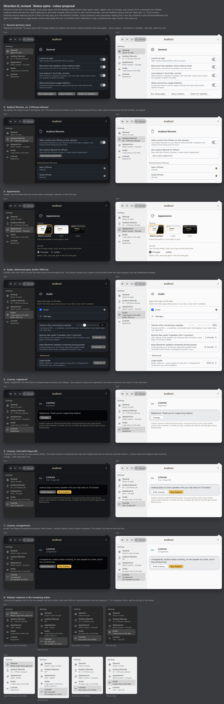
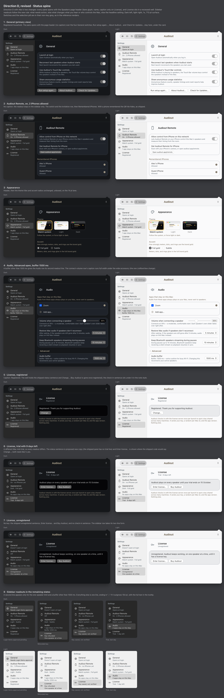
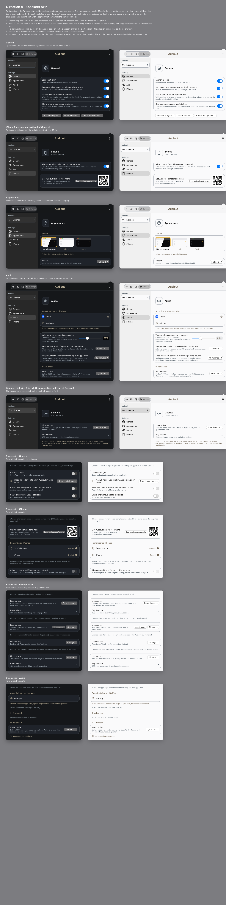
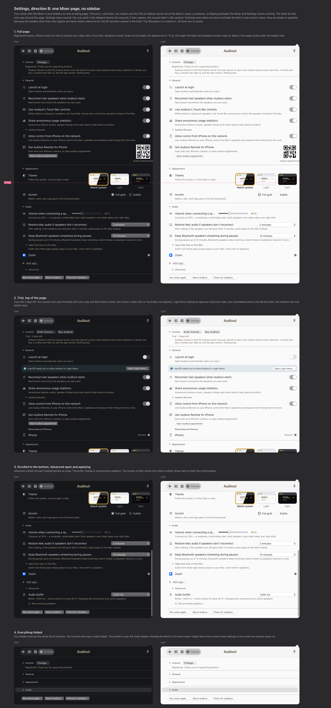
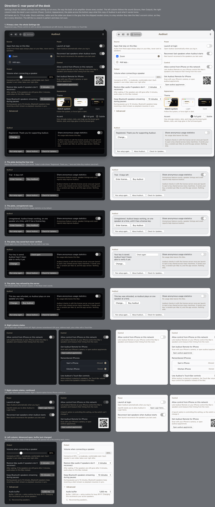
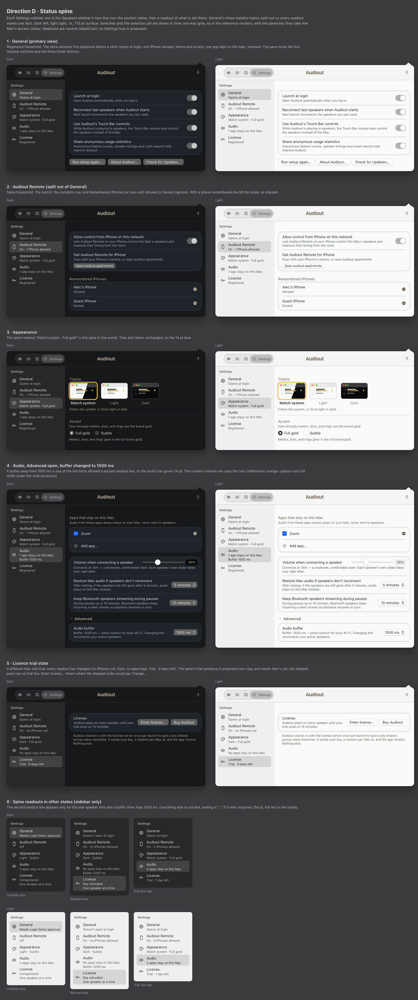

<title>Settings Tab Directions</title>
<style>
/* Layout: one sticky switcher over four panels; each panel is a short dossier then the full render. */
:root {
  --bg: #FAFAFB; --fg: #1A1B1E; --fg2: #5E646B; --fg3: #818C94;
  --panel: #F1F2F4; --edge: #D9DCE0; --gold: #8A6A2F; --gold-fill: #E8B84B; --ink-on-gold: #171104;
  --font: -apple-system, BlinkMacSystemFont, "SF Pro Text", "Helvetica Neue", Helvetica, Arial, sans-serif;
  --mono: ui-monospace, "SF Mono", Menlo, monospace;
}
@media (prefers-color-scheme: dark) { :root:not([data-theme="light"]) {
  --bg: #0A0A0C; --fg: #F2F0EA; --fg2: #B7AC95; --fg3: #818C94;
  --panel: #15171A; --edge: #2A2E33; --gold: #E8B84B; --gold-fill: #E8B84B; --ink-on-gold: #171104;
  color-scheme: dark } }
:root[data-theme="dark"] {
  --bg: #0A0A0C; --fg: #F2F0EA; --fg2: #B7AC95; --fg3: #818C94;
  --panel: #15171A; --edge: #2A2E33; --gold: #E8B84B; --gold-fill: #E8B84B; --ink-on-gold: #171104;
  color-scheme: dark }
* { box-sizing: border-box }
body { background: var(--bg); color: var(--fg); font: 15px/1.5 var(--font); margin: 0; padding-block: 0 48px }
.wrap { max-width: 1200px; margin: 0 auto; padding-inline: 20px }
header.top { padding-block: 28px 12px }
h1 { font-size: 24px; line-height: 1.2; margin: 0 0 6px; letter-spacing: -0.01em; text-wrap: balance }
.lede { color: var(--fg2); margin: 0; max-width: 70ch }
nav.tabs { position: sticky; top: env(safe-area-inset-top, 0px); z-index: 2; background: var(--bg); border-bottom: 1px solid var(--edge); padding-block: 10px }
nav.tabs .wrap { display: flex; gap: 8px; flex-wrap: wrap }
nav.tabs button { font: 600 13px/1 var(--font); color: var(--fg2); background: var(--panel); border: 1px solid var(--edge); border-radius: 999px; padding: 9px 14px; cursor: pointer }
nav.tabs button:hover { color: var(--fg) }
nav.tabs button[aria-selected="true"] { background: var(--gold-fill); color: var(--ink-on-gold); border-color: transparent }
nav.tabs button:focus-visible { outline: 2px solid var(--gold); outline-offset: 2px }
section.dir { padding-block: 24px 8px }
.dossier { display: grid; grid-template-columns: 1.1fr 1fr; gap: 24px 40px; margin-bottom: 20px }
.dossier > div { min-width: 0 }
@media (max-width: 760px) { .dossier { grid-template-columns: 1fr } }
h2 { font-size: 20px; margin: 0 0 4px; letter-spacing: -0.01em }
.thesis { font-size: 17px; line-height: 1.4; margin: 0 0 14px; max-width: 60ch }
h3 { font-size: 11px; letter-spacing: 0.06em; text-transform: uppercase; color: var(--fg3); margin: 16px 0 6px }
ul { margin: 0; padding-left: 18px } li { margin: 3px 0 } li::marker { color: var(--fg3) }
.ask li strong { font-weight: 600 }
.note { font-size: 13px; color: var(--fg2); border-left: 2px solid var(--edge); padding-left: 12px; margin-top: 14px }
figure { margin: 0; border: 1px solid var(--edge); border-radius: 8px; overflow: hidden; background: var(--panel) }
figure img { display: block; width: 100%; height: auto }
figcaption { font-size: 12px; color: var(--fg3); padding: 8px 12px; display: flex; justify-content: space-between; gap: 12px; flex-wrap: wrap }
figcaption a { color: var(--gold); text-decoration: none } figcaption a:hover { text-decoration: underline }
.shared { background: var(--panel); border: 1px solid var(--edge); border-radius: 8px; padding: 14px 18px; margin-top: 28px }
.shared h3 { margin-top: 0 }
code { font: 12.5px var(--mono); background: var(--panel); border: 1px solid var(--edge); border-radius: 4px; padding: 0 4px }
</style>

<header class="top"><div class="wrap">
  <h1>Settings tab: four directions</h1>
  <p class="lede">Four briefs and comps for reshaping the Settings tab to sit beside the Mixer and Speakers tabs. Each keeps every setting that ships today, stock AppKit controls, both appearances, and no colour of its own unless you grant one. Pick one, or name the parts to combine.</p>
</div></header>

<nav class="tabs" aria-label="Directions"><div class="wrap" role="tablist">
  <button role="tab" aria-selected="true" data-for="d2c">D revised · with colour</button>
  <button role="tab" aria-selected="false" data-for="d2">D revised · neutral</button>
  <button role="tab" aria-selected="false" data-for="a">A · Speakers twin</button>
  <button role="tab" aria-selected="false" data-for="b">B · One Mixer page</button>
  <button role="tab" aria-selected="false" data-for="c">C · Rear panel</button>
  <button role="tab" aria-selected="false" data-for="d">D · Status spine</button>
</div></nav>

<main class="wrap">

<section class="dir" id="d2c" role="tabpanel">
  <div class="dossier">
    <div>
      <h2>D revised · with colour</h2>
      <p class="thesis">The neutral revision after the colorize pass. Settings keeps no hue of its own. Colour appears only where the Mixer already uses it for the same fact: gold on Buy Audiout as the one call to action, and the Mixer's steel-blue note colour on the glyph of any row or License header whose state needs you.</p>
      <h3>Placements, each needing your yes</h3>
      <ul class="ask">
        <li><strong>Buy Audiout</strong> as the gold prominent button in the trial and unregistered states. The licence gate puts gold on Register and keeps Buy stock, so the two would differ.</li>
        <li><strong>Steel-blue glyph</strong> on sidebar rows and the License header while something needs you: Login Items approval, unregistered, trial ended, key refunded or revoked, key not recognised. Readout text stays grey; the words carry the state.</li>
        <li><strong>Light theme tile ring</strong> is gold at 1.77:1 as shipped, under the 3:1 floor. Flagged, not changed.</li>
        <li><strong>Not drawn:</strong> a failure-red glyph on "Some speakers didn't reconnect", the one real failure Settings can show.</li>
      </ul>
      <h3>Rejected</h3>
      <ul>
        <li>A Settings accent hue: it would only decorate words and stock controls, and the nearby hue bands are fenced.</li>
        <li>Failure red on the one-speaker limit: the Mixer shows that state in the info tier, and red text measures 2.57:1 on the dark selected row.</li>
        <li>A warning tone for Login Items: no warning token exists, and amber belongs to gold.</li>
      </ul>
    </div>
    <div>
      <h3>Contrast</h3>
      <ul>
        <li>Gold button ink 10.2:1 on the fill in both appearances.</li>
        <li>Steel-blue glyph on the sidebar 6.5:1 dark, 5.0:1 light; on the selected pill 4.4:1 and 3.9:1. Floor for a glyph is 3:1.</li>
        <li>Readout text 6.9:1 dark, 6.2:1 light.</li>
      </ul>
      <p class="note">Full audit, strategy and figures in direction-d2-color/notes.md.</p>
    </div>
  </div>
  <figure><figcaption><span>Full comp, dark left and light right, 1x at 713 pt.</span><span><a href="comps/d2c.html" target="_blank" rel="noopener">Open comp as a page</a></span></figcaption></figure>
</section>

<section class="dir" id="d2" role="tabpanel" hidden>
  <div class="dossier">
    <div>
      <h2>D revised · status spine with page header and licence well</h2>
      <p class="thesis">Direction D with the two changes: every pane opens with the Speakers page header as a bare glyph, no well (caption only on License), and the License pane is a recessed well holding the state sentence, the buttons and the check-in note. Sidebar readouts follow one rule.</p>
      <h3>The readout rule</h3>
      <ul>
        <li>Something you must act on wins: "Needs Login Items approval", "Key saved, not verified".</li>
        <li>Else the fact that changes what you hear or who can control the Mac: apps kept local, phones allowed, the one-speaker limit.</li>
        <li>Else the section's headline setting: "Opens at login", "Match system · Full gold".</li>
        <li>Never a count of settings, never "Default". A second line only for the one-speaker limit and a buffer other than 1000 ms.</li>
      </ul>
      <h3>Still needs your call</h3>
      <ul class="ask">
        <li><strong>Remote with phones remembered but none allowed:</strong> "On · no iPhones allowed" as drawn, or something else.</li>
        <li><strong>Trial sentence</strong> on the License pane: "Audiout plays on every speaker until your trial ends on 15 October."</li>
        <li><strong>Section order,</strong> License last.</li>
      </ul>
    </div>
    <div>
      <h3>Settled</h3>
      <ul>
        <li>Sidebar split stays. Five rows: General, Audiout Remote, Appearance, Audio, License.</li>
        <li>Page header on every pane. License as a well, not a card.</li>
        <li>Settings stays neutral.</li>
      </ul>
      <p class="note">Frame 8 shows the sidebar alone in four more households: Login Items pending, a refunded key, a saved but unverified key, and a trial on its last day.</p>
    </div>
  </div>
  <figure><figcaption><span>Full comp, dark left and light right, 1x at 713 pt.</span><span><a href="comps/d2.html" target="_blank" rel="noopener">Open comp as a page</a></span></figcaption></figure>
</section>

<section class="dir" id="a" role="tabpanel" hidden>
  <div class="dossier">
    <div>
      <h2>A · Speakers twin</h2>
      <p class="thesis">Settings copies the Speakers tab's sidebar and page layout exactly. The License takes the plate slot that Main Audio has on Speakers. Every row carries its own stock control on the right, with a caption saying what the current value does.</p>
      <h3>Reuses</h3>
      <ul>
        <li>Sidebar plate, page header with 48 pt icon well, grouped card of list rows, note label, fold view, theme tiles.</li>
        <li>General splits into General, iPhone and License so each page is one card.</li>
      </ul>
      <h3>Needs your call</h3>
      <ul class="ask">
        <li><strong>Settings colour:</strong> argues for none.</li>
        <li><strong>Split General</strong> into General, iPhone, License.</li>
        <li><strong>License placement:</strong> plate at the top of the sidebar, or last plain row.</li>
        <li><strong>Card radius</strong> 16 pt as drawn, or 26 pt.</li>
        <li><strong>Accent</strong> becomes a pop-up instead of two radio buttons.</li>
        <li><strong>Buy Audiout</strong> gold during a trial, or stock as drawn.</li>
        <li>Three new strings: the trial caption, an "Audiout" sidebar title, the License page captions.</li>
      </ul>
    </div>
    <div>
      <h3>Cost to build</h3>
      <ul>
        <li>Sidebar and split stay. The page components live in the window package, which Settings cannot import today, so they move to the shared package first.</li>
        <li>Four sidebar rows plus a plate instead of three rows.</li>
      </ul>
      <p class="note">Switches and the slider are drawn in the Mac's accent blue, as a key window shows them. The shipped headless renders show them grey.</p>
    </div>
  </div>
  <figure><figcaption><span>Full comp, dark left and light right, 1x at 713 pt.</span><span><a href="comps/a.html" target="_blank" rel="noopener">Open comp as a page</a></span></figcaption></figure>
</section>

<section class="dir" id="b" role="tabpanel" hidden>
  <div class="dossier">
    <div>
      <h2>B · One Mixer page, no sidebar</h2>
      <p class="thesis">Settings becomes one scrolling page of four cards (License, General, Appearance, Audio) using the Mixer's own card headers, column positions and fold behaviour, so switching between Mixer and Settings moves nothing on screen. Folding cards is the only way around the page.</p>
      <h3>Reuses</h3>
      <ul>
        <li>Mixer card header, the 200 pt trailing column, the fold view, card message rows for the Login Items note, note label.</li>
        <li>With every card folded, the four header lines are the full list of sections.</li>
      </ul>
      <h3>Needs your call</h3>
      <ul class="ask">
        <li><strong>Drop the sidebar</strong> and accept a page that scrolls (about 1,200 pt open inside a 711 pt surface). Rewrites the folder rule "sections are sidebar rows".</li>
        <li><strong>Settings colour:</strong> argues for none.</li>
        <li><strong>Reuse the Mixer's row fader</strong> for connect volume. Its idle readout is in the gold family. Fallback is a stock slider.</li>
        <li><strong>License card</strong> first (52 pt folded) or last.</li>
        <li><strong>Remember folds</strong> until quit, as the Mixer does, or across launches.</li>
        <li><strong>Option-click</strong> a header to fold every card: keep or drop.</li>
        <li><strong>Row glyphs</strong> on each setting: keep or drop.</li>
      </ul>
    </div>
    <div>
      <h3>Cost to build</h3>
      <ul>
        <li>The Mixer card header is built inside the popover package, which depends on Settings. It moves to the shared package first.</li>
        <li>The sidebar tests and the "pane selected" analytics event go; the sidebar rule in the folder's notes is rewritten.</li>
      </ul>
      <p class="note">The dashed line in the first frame marks 711 pt, the height the Mixer and Speakers open at. Below it the page scrolls under the header strip.</p>
    </div>
  </div>
  <figure><figcaption><span>Full comp, dark left and light right, 1x at 713 pt.</span><span><a href="comps/b.html" target="_blank" rel="noopener">Open comp as a page</a></span></figcaption></figure>
</section>

<section class="dir" id="c" role="tabpanel" hidden>
  <div class="dossier">
    <div>
      <h2>C · Rear panel of the desk</h2>
      <p class="thesis">Settings drops its sidebar and lays every setting out at once in two 335 pt columns, the way the back of an amplifier shows every socket. The left column follows the sound (Source, then Output). The right holds the desk's own controls (Power, Control, Appearance). A recessed plate across the bottom carries the licence state, usage statistics and the check-in sentence.</p>
      <h3>Reuses</h3>
      <ul>
        <li>The Speakers page's label-and-rule line for each group, the bare and card grouped sections, the well for the plate, the readout well, the fold view.</li>
        <li>Group names are the app's own words: Source and Output are Mixer column headings, Power and Control are plain words. Row text is unchanged.</li>
      </ul>
      <h3>Needs your call</h3>
      <ul class="ask">
        <li><strong>Drop the sidebar</strong> for one two-column page. The direction depends on it.</li>
        <li><strong>Settings colour:</strong> argues for none.</li>
        <li><strong>Group names:</strong> Source, Output, Power, Control, Appearance, Audiout.</li>
        <li><strong>Usage statistics</strong> move onto the plate beside the check-in sentence.</li>
        <li><strong>Page height</strong> is about 890 pt against the Mixer's 711. On a 13-inch screen the bottom scrolls.</li>
      </ul>
    </div>
    <div>
      <h3>Cost to build</h3>
      <ul>
        <li>No new custom-drawn piece. The grouped section's bare style gets its first user.</li>
        <li>Same sidebar removal costs as B: tests, the analytics event, the folder rule.</li>
      </ul>
      <p class="note">The comp follows the code on one point the inputs got wrong: "Reconnecting speakers…" belongs to the Audio buffer change, not the Restore pop-up.</p>
    </div>
  </div>
  <figure><figcaption><span>Full comp, dark left and light right, 1x at 713 pt.</span><span><a href="comps/c.html" target="_blank" rel="noopener">Open comp as a page</a></span></figcaption></figure>
</section>

<section class="dir" id="d" role="tabpanel" hidden>
  <div class="dossier">
    <div>
      <h2>D · Status spine</h2>
      <p class="thesis">Each Settings sidebar row is the Speakers sidebar's two-line row: the section name, then a readout of what is set there. General splits into five sections so every readout states one fact. The pane is where you change it; no page header, since the selected row already names the page and its state.</p>
      <h3>Reuses</h3>
      <ul>
        <li>The Speakers sidebar's two-line row (as "Shown while in use" uses it), grouped cards of list rows, the fold view, theme tiles and radios unchanged.</li>
        <li>Readouts are neutral grey, one line. A second line appears only for the one-speaker licence limit or a buffer other than 1000 ms.</li>
      </ul>
      <h3>Needs your call</h3>
      <ul class="ask">
        <li><strong>Settings colour:</strong> argues for none. One option left out: "One speaker at a time" in the failure red.</li>
        <li><strong>Split General</strong> into General, Audiout Remote and License (five rows).</li>
        <li><strong>No page header</strong> on the panes.</li>
        <li><strong>Which fact each readout shows:</strong> General shows launch at login; Audio shows apps kept on this Mac, plus the buffer only when changed.</li>
        <li><strong>New trial sentence</strong> for the License pane: "Audiout plays on every speaker until your trial ends on 15 October."</li>
        <li><strong>Section order,</strong> License last.</li>
      </ul>
    </div>
    <div>
      <h3>Cost to build</h3>
      <ul>
        <li>Sidebar and split stay. Readout strings need a model that watches every setting the spine reports; VoiceOver reads the readout as the row's value.</li>
        <li>Same package move as A for the list row and grouped section.</li>
      </ul>
      <p class="note">The last frame shows the spine alone in three other states: a limited copy, a refused key, and a trial on its last day.</p>
    </div>
  </div>
  <figure><figcaption><span>Full comp, dark left and light right, 1x at 713 pt.</span><span><a href="comps/d.html" target="_blank" rel="noopener">Open comp as a page</a></span></figcaption></figure>
</section>

<div class="shared">
  <h3>Found by all four, outside the pick</h3>
  <ul>
    <li><strong>Trial copy:</strong> as the code reads, a running trial falls through to the registered line ("Registered. Thank you for supporting Audiout.") with the Change… button and no Buy Audiout. Every comp shows a trial line instead. Needs a check against what the server returns for a trial key.</li>
    <li><strong>Shared parts live in the wrong package:</strong> the list row, grouped section and page header are internal to the window package, which Settings cannot import. Any direction except the shipped one moves them to the shared package first.</li>
    <li><strong>Header strip:</strong> the brief said no brand lockup; the shipped render carries the centred "Audiout" wordmark. Every comp copied the render.</li>
    <li><strong>iPhone invitation:</strong> once a phone is remembered the QR tile hides, but the row still says "Scan with your iPhone's camera".</li>
  </ul>
</div>

</main>

<script>
(function () {
  var tabs = document.querySelectorAll('nav.tabs button');
  var panels = document.querySelectorAll('section.dir');
  function show(id, push) {
    tabs.forEach(function (t) { t.setAttribute('aria-selected', t.dataset.for === id ? 'true' : 'false'); });
    panels.forEach(function (p) { p.hidden = p.id !== id; });
    if (push) { try { history.replaceState(null, '', '#' + id); } catch (e) {} }
    window.scrollTo({ top: 0 });
  }
  tabs.forEach(function (t) { t.addEventListener('click', function () { show(t.dataset.for, true); }); });
  var h = (location.hash || '').replace('#', '');
  if (/^(a|b|c|d|d2|d2c)$/.test(h)) show(h, false);
})();
</script>
